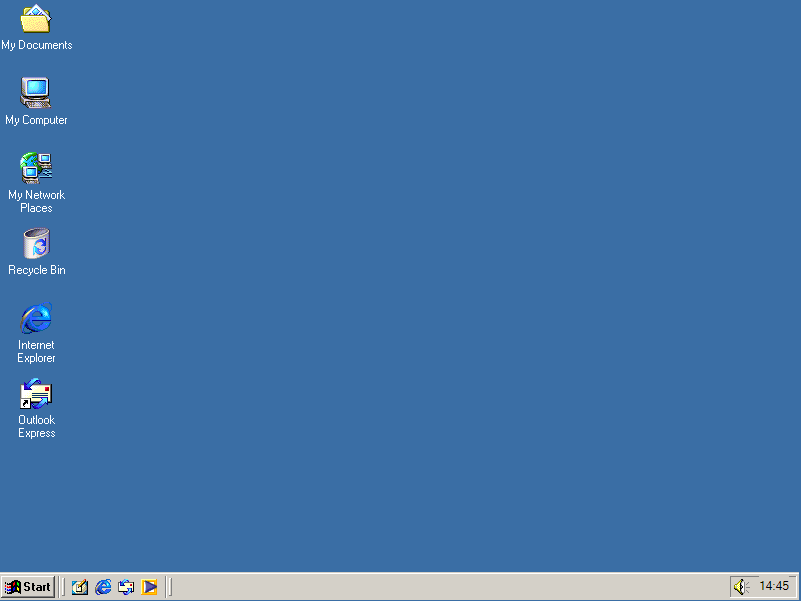
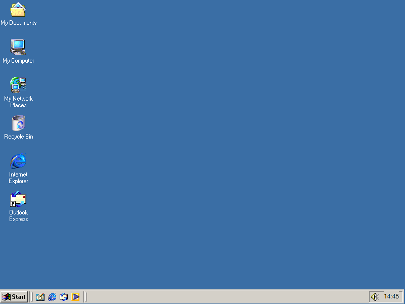

Windows ME
O Windows Millennium Edition, ou Windows ME (com a palavra "me" em seu logotipo, que no inglês significa "eu", mas geralmente com as letras pronunciadas individualmente, "M-E"), é um sistema operacional de interface gráfica desenvolvido pela Microsoft, lançado em 14 de Setembro de 2000. Foi o último sistema operacional da família Windows 9x, que rodam em cima do MS-DOS
O Windows ME foi o sucessor do Windows 98 SE, e tinha como público-alvo usuários domésticos. Ele vinha com o Internet Explorer 5.5, Windows Media Player 7, e o então novo Windows Movie Maker, que continha o básico de edição de vídeo, tendo sido desenvolvido para fácil uso aos usuários domésticos. A Microsoft também atualizou a interface gráfica, as características da shell, e o Windows Explorer do Windows ME, com algumas das adições que haviam sido introduzidas no Windows 2000, que havia sido lançado para uso profissional sete meses depois. Os softwares do Windows ME poderiam ser atualizados para o Internet Explorer 6 SP1 (não o SP2, ou o Internet Explorer 7, no entanto), Outlook Express 6 SP1, e o Windows Media Player 9. O Microsoft .NET Framework 2.0 - e posteriores - também eram suportados; no entanto, versões 2.0 SP1, 3.x e posteriores não. O Office XP foi a última versão do Microsoft Office compatível com o Windows ME.
O Windows ME é uma continuação do Windows 9x, mas com um acesso restrito ao modo real MS-DOS, com o intuito de reduzir o tempo de boot do sistema. Mesmo assim, essa foi uma das mudanças mais criticadas do Windows ME, já que muitos softwares realmente precisavam do modo real do MS-DOS para rodar, como velhos utilitários para HD que já não rodavam mais (apesar de que o sistema poderia dar o boot por vias do modo DOS através do disquete do Windows ME, ou através de uma configuração manual, com o objetivo de habilitar o acesso ao modo MS-DOS oculto).
História
Em 1998, a Microsoft disse que não haveria nenhuma versão do Windows 9x depois do Windows 98.[6] Em maio de 1999, no entanto, a Microsoft lançou o Windows 98 Second Edition, e então anunciou uma nova versão do Windows 9x, que depois foi revelado que seu codinome iria ser Millennium. Em 2000, foi então lançado o Windows Millennium Edition (Windows ME).
Ao menos três versões betas do Windows ME estavam disponíveis durante seu desenvolvimento. Em 24 de Setembro de 1999, a Microsoft anunciou que a primeira versão beta do Windows ME foi lançada. A segunda beta apareceu em 24 de Novembro de 1999, e adicionou uma série de características como o System File Protection (Sistema de Proteção de Arquivos), e o Game Options Control Panel (Painel de Controle de Jogos). Diversas builds foram lançadas de forma fragmentada entre a primeira e segunda versões betas, adicionando outras características como atualizações automáticas e menus personalizados. A terceira versão beta foi lançada em 11 de Abril de 2000, e essa versão apresentou pela primeira vez a versão final das músicas de inicialização, e de quando o Windows é desligado (derivadas do Windows 2000), já que as betas anteriores ainda usavam os sons de inicialização e de desligamento do Windows 98. A tela de boot da versão final já havia aparecido na terceira beta (build 2513). A data de disponibilidade do Windows ME perdurou até 31 de Dezembro de 2000. A Microsoft cessou com o suporte primário em 31 de Dezembro de 2003, e com o suporte estendido finalizado em 11 de Julho de 2006. O suporte estendido para o Windows 98 e o Windows 98 SE encerraram no mesmo dia. O Windows ME também vinha com o Microsoft Java Virtual Machine, fazendo com que o Windows 98 e o Windows 98 SE fossem retirados do Microsoft Developer Network apenas no final de 2003. Na época de seu lançamento, a Microsoft anunciou que haveria uma promoção por tempo limitado de Setembro de 2000 até Janeiro de 2001, que permitia que usuários do Windows 95 ou Windows 98 fizessem o upgrade para o Windows ME por US$ 59,95, ao invés do preço varejo de US$ 109,00.
Pouco depois que o Windows ME foi lançado em 19 de Junho de 2000,[10] a Microsoft lançou um campanha para promover o Windows ME nos Estados Unidos, intitulada de Meet Me Tour. Um programa patentado promocional incluiu o Windows ME, OEMs e outras parceiras em uma atração voltada a multimídia em 25 cidades dos Estados Unidos. Esta foi lançada em 14 de Setembro de 2000.
Se comparado com outros lançamentos do Windows, o Windows ME teve um curto período de vida, sendo de apenas um ano. A Microsoft planejou fazer o Windows ME o primeiro sistema operacional Windows baseado na kernel do NT voltado para usuários domésticos, enquanto o Windows 2000 (baseado em NT) era destinado para clientes corporativos e para uso em servidores. Todavia, isso não aconteceu e o Windows ME foi levado às pressas ao mercado após o projeto Neptune ter sido cancelado. O Windows ME foi criticado por ser problemático, lento e instável. O Windows ME, juntamente com o Windows 2000, foi logo substituído pelo Windows XP, que foi lançado em 24 de Agosto de 2001.
Interface
O Windows ME tinha melhoramentos na shell derivadas do Windows 2000, como os menus personalizados, barras de ferramenta customizáveis para o Windows Explorer, a barra auto-complete na barra de endereço do Windows Explorer e a caixa executar, o sistema avançado de tipo e associação de arquivos do Windows 2000, a exibição de comentários nos atalhos como forma de tooltip, colunas expansíveis no modo de Detalhes (IColumm Provider interface), sobreposição de ícones, painel de pesquisa integrada no Windows Explorer, dividido por suas funções ou menus, a Places bar em diálogos comuns como Abrir e Salvar, menu iniciar em cascata com pastas especiais, parcial conteúdo do Plus 95! e Plus! 98 (dois programas/compilações de temas para Windows), e gráficos atualizados. A área de notificação do Windows ME posteriormente começou a dar suporte a ícones highcolor de 16-bit. O painel de controle de multimídia também foi atualizado do Windows 98 SE. As opções da Barra de Tarefas e o Menu Iniciar permitiram a desabilitação do drag and drop (ação de pegar e soltar) e poderia prevenir a movimentação ou o redimensionamento da barra de tarefas, que foi mais fácil para usuários mais novos.
Requisitos Mínimos de Sistema
Processador Pentium de 150MHz
32 MB de memória
Monitor VGA
320 MB de armazenamento
Leitores de CD-ROM e Disquete de 3,5 polegadas
Modem de 56,5 Kbps com conexão contínua (recomendado)
Mouse (opcional)
Imagens
 Logo do Windows ME

Área de trabalho do Windows ME
Menu Iniciar do Windows ME
Logo do Windows ME

Área de trabalho do Windows ME
Menu Iniciar do Windows ME
Windows 2000
O Microsoft Windows 2000 foi um sistema operacional preemptivo, gráfico e de fácil aprendizagem que foi desenvolvido para trabalhar com um ou mais processadores de 32 bits em computadores na arquitetura x86 e 64 bits na arquitetura IA64. É parte de uma linha de sistemas operacionais denominada Microsoft Windows NT e foi lançado em 17 de fevereiro de 2000, sendo o sucessor do Windows NT 4.0. Ele está disponível em quatro versões: Professional, Server, Advanced Server e Datacenter Server. Adicionalmente, a Microsoft oferece o Windows 2000 Advanced Server - Edição Limitada, que foi lançado em 2001 e roda em processadores de 64 bits Itanium. O Windows 2000 é classificado com um sistema operacional de núcleo híbrido, e sua arquitetura é dividida em dois modos: usuário e núcleo. O "modo núcleo" dá acesso total aos recursos do sistema e suporta a execução das aplicações em modo usuário, com acesso restrito aos recursos.
Todas as versões do Windows 2000 possuem em comum muitas funcionalidades, incluindo muitas utilidades de sistema como o Microsoft Management Console (MMC) e sistemas de gerenciamento de aplicação como o utilitário de desfragmentação de disco.
Todas as versões do Windows 2000 suportam o sistema de arquivos Windows NT versão 5 ou NTFS 5 (New Tecnology File System), o sistema de arquivos criptografado (EFS), também armazenamento em discos básicos ou dinâmicos. O armazenamento em discos dinâmicos permite que diferentes volumes sejam utilizados. A família 2000 Server também teve um aumento de funcionalidades, incluindo a capacidade de ter um serviço de diretório único: o Active Directory, Distributed File System (um sistema de arquivos que possibilita compartilhamento de arquivos) e armazenamento em volumes com tolerância à falhas.
O Windows 2000 pode ser instalado numa empresa através de instalações interativas ou não interativas. A instalação não interativa se baseia no uso de um arquivo de resposta que tem a finalidade de preencher as informações de instalação, e pode ser utilizado através de um CD "bootável" usando o Microsoft Systems Management Server (SMS), através do System Preparation Tool (Sysprep).
História
O Windows 2000 originalmente vem do Microsoft Windows NT. Originalmente chamado de Windows NT 5, a Microsoft mudou seu nome para Windows 2000 em 27 de outubro de 1998 [3] . A primeira versão beta do Windows 2000 foi liberada em 27 de setembro de 1997 e vários betas foram liberados até o Beta 3 que foi lançado em 29 de Abril de 1999. A partir dali, a Microsoft lançou mais três versões beta até o seu lançamento do sistema operacional para seus parceiros em 12 de Dezembro de 1999[4]. Oficialmente o lançamento do Windows 2000 foi em 17 de fevereiro de 2000 e a imprensa imediatamente declarou que esse era o sistema operacional mais estável lançado pela Microsoft em toda a sua história. A Novell, entretanto, não ficou tão impressionada com a nova arquitetura de serviços de diretório da Microsoft, eles acharam o Active Directory menos escalável que o seu proprio serviço de diretório, o Novell Directory Services (NDS) lançado muito antes. [5] Em 29 de setembro de 2000, a Microsoft lançou o Windows 2000 Datacenter. A Microsoft lançou o Service Pack 1 (SP1) em 15 de agosto de 2000, Service Pack 2 (SP2) em 16 de maio de 2001, Service Pack 3 (SP3) em 29 de Agosto de 2002 e seu último Service Pack (SP4) em 26 de Junho de 2003. A Microsoft anunciou que eles não iriam lançar o Service Pack 5, mas, ao invés disso, eles lançaram o Update Rollup 1 para o Service Pack 4 em 13 de Setembro de 2005.
O Windows 2000 já foi trocado por novos sistemas operacionais da Microsoft. Ela já trocou os produtos do Windows 2000 Server pelo Windows Server 2003, e o Windows 2000 Professional pelo Windows XP Professional. O Windows Neptune iniciou seu desenvolvimento em 1999, e achava-se que iria ser a versão doméstica do Windows 2000. Entretanto, o projeto estourou em tempo de produção e apenas um alfa foi criado. O Windows ME (Millenium Edition) foi lançado como seu substituto e o projeto Neptune teve seu projeto adiado para a produção do Windows XP. Os únicos elementos do Projeto Windows que foram incluídos no Windows 2000 foram a capacidade do upgrade das versões 95 e 98 e o suporte para o sistema de arquivos FAT32.
Muitos problemas de segurança sérios foram encontrados no Windows 2000. Code Red e Code Red II foram famosos (e muito difundidos pela imprensa do mundo todo) worms que exploraram vulnerabilidades do serviço de indexação do Internet Information Services (IIS) do Windows 2000. Em agosto de 2003, dois worms denominados Sobig e o Blaster atacaram milhões de computadores com Windows, resultando no maior tempo de down-time (serviço fora do ar) e no maior gasto para limpeza até aquela data.
Versões
A Microsoft lançou várias versões do Windows 2000 para corresponder com os diferentes mercados e necessidades de negócio. Lançou o Windows 2000 Profissional, Windows 2000 Server, Windows 2000 Advanced Server e Windows 2000 Datacenter Server.
Windows 2000 Profissional
O Windows 2000 Profissional foi feito para responder às exigências de um sistema operativo para empresas, negócios e escritórios. É a unidade básica do Windows 2000, e a mais comum, mesmo após a descontinuação do suporte técnico (sendo a segunda versão mais utilizada, atrás apenas do Windows XP Professional). Oferece maior estabilidade e segurança do que qualquer outra versão anterior do Windows para o segmento profissional, suporta até 4 GB de memória RAM e gerencia até 2 processadores simétricos.
Windows 2000 Server
O Windows 2000 Server partilha a mesma interface de utilizador do Windows 2000 Professional, contendo adicionalmente componentes para correr infraestruturas e aplicações para servidor. Uma delas é o Active Directory, um directório centralizado de utilizadores, baseado no LDAP (Lightweight Direct Access Protocol). A Microsoft também integrou o protocolo Kerberos de autenticação, substituindo o muito criticado NTLM (Windows NT LAN Manager), utilizado em versões anteriores. Ainda introduziu um servidor DNS que permite um registro dinâmico de endereços IP. Esta versão do Windows 2000 suporta até 4 GB de memória RAM e gerencia até 4 processadores simétricos.
Suporte adicional
Clustering
- Faz vários computadores aparecem como um para aplicativos e clientes. Podem ser agrupados entre 2 e 32 servidores. O "Cluster Service" deve ser instalado para implementar o cluster. Suas características são:Network Load Balancing (NLB).
Aquisição automática caso o computador que está executando um aplicativo falhar.
O diferencial de hardware do Windows 2000 Advanced Server é o seu suporte a até 8 GB de memória RAM e 8 processadores simétricos.
Requisitos Minimos de Sistema
Windows 2000 Profissional:
CPU Pentium ou compatível de 133 MHz ou superior
64 megabytes (MB) de memória RAM (128MB recomendados)
700 megabytes de espaço em disco (2GB recomendados)
Windows 2000 Server:
CPU Pentium ou compatível de 133 MHz ou superior
Mínimo recomendado de 256 MB de memória RAM
2 GB espaço em disco
Windows 2000 Advanced Server:
CPU Pentium ou compatível de 133 MHz ou superior
Mínimo recomendado de 256 MB de memória RAM
2 GB de espaço em disco